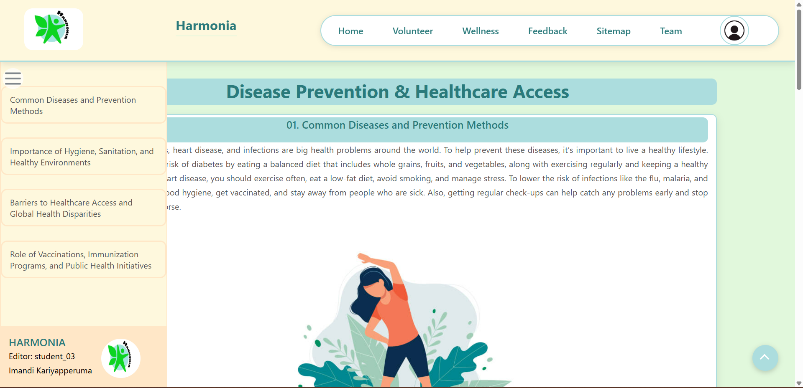

The feedback form page allows users to share their experiences with the website, helping to improve content quality, usability, and overall engagement. The design follows a structured layout that ensures a smooth and intuitive user experience while maintaining accessibility and responsiveness.
This page uses a semantic HTML structure to improve clarity and accessibility.
The <form> element organizes all input fields, while <label> elements
provide clear descriptions.
The form includes:
<input type="text"> and <input type="email"> –
Collects user details like name and email.<select"> – Used for structured responses like age group selection.<input type="radio"> – Captures user ratings for
satisfaction and content quality.<textarea> – Allows users to share detailed feedback or
suggestions.<button> – Enables form submission and reset functions, with JavaScript
validation to prevent incomplete submissions.Navigation is included in the <header>,
and a structured footer with social media links and additional website resources ensures consistency
across the platform.
The feedback form is designed with a clean and user-friendly interface, applying modern CSS techniques such as:
max-width: 100% and flexible units.border-radius box-shadow, and background colors enhance readability and structure.box-shadow .inputBoxes provide subtle
feedback when users interact with input fields.#FEF8DD → #FFE7C7 on hover) improve engagement.padding and margin values ensure proper spacing for easy navigation.JavaScript ensures that users have entered all required information before submitting the form.
validateForm() Function – Prevents submission if required fields are left empty,
displaying alerts
for missing input.confirmReset() Function – Asks for confirmation before resetting the form to
prevent accidental data loss.
Tab key.box-shadow .inputBoxes provide subtle
feedback when users interact with input fields.figure 01: Feedback Page (click the picture to view the feedback page)
The team page introduces the contributors behind the website, detailing their roles and responsibilities. The design emphasizes clarity, interactivity, and accessibility to ensure a user-friendly experience.
The page is organized with semantic HTML elements to enhance accessibility and navigation. The main components include:
The visual design incorporates modern CSS techniques to enhance user experience:
.team class ensures flexibility, allowing the content to adjust based on the screen size.
Aesthetic Styling – The border-radius, box-shadow, and background color #EDF9EB contribute to a clean and professional look..teamMember:hover applies a transform effect to slightly lift the card, adding a dynamic feel..teamMember:hover .memberDetails reveals additional information with a scale effect.The page is designed to be engaging and informative through various interactive elements:
tabindex="0" attribute ensures that users navigating with a keyboard can access team member profiles.transition: all 0.3s ease) to create an engaging user experience.figure 02: Team Page (click the picture to view the team page)
The Disease Prevention and Healthcare Access page aims to deliver informative content on health-related topics while offering an intuitive and visually engaging user experience. It features well-structured content sections, interactive navigation, and responsive design, ensuring accessibility on a variety of devices.
The page is organized with semantic HTML elements to enhance accessibility and navigation. The main components include:
The page's visual appeal and user experience are enhanced through modern CSS techniques, including:
#menuBar) remains hidden by default and smoothly expands upon clicking
the menu icon (#menuIcon), improving accessibility.#menuBar a) are styled with padding, transitions, and background color changes
to enhance usability..menu-footer) ensures branding consistency by including the website logo and
editorial information..content class ensures a consistent and structured layout, using
border-radius, box-shadow, and padding for a clean presentation.transition: all 0.3s ease)
highlight content sections upon user interaction..images) – Ensures images are properly aligned and resized
(width: 45%, display: block; margin: auto;) for optimal viewing..imageCaption) – Provides concise explanations using centered text with an
adjusted font size for readability.#menuIcon) is styled for easy accessibility (position: fixed;
cursor: pointer; border-radius: 50px; opacity: 0.7;)..subtopic) use a defined background color and border-radius to maintain
consistency with the site's theme.background-color: #FFE7C7;)
when hovered over, providing visual feedback to users.To enhance user experience, JavaScript is used to add interactive menu functionality:
toggleMenuBar() Function – Expands or collapses the side menu when the menu icon
is clicked, ensuring a smooth sliding effect.Adding interactive elements makes the page more lively and easier to use, reducing clutter and allowing for better navigation. These changes will help the page offer an engaging and smooth experience while keeping it accessible for everyone.
figure 03: Content Page (click the picture to view the content page)